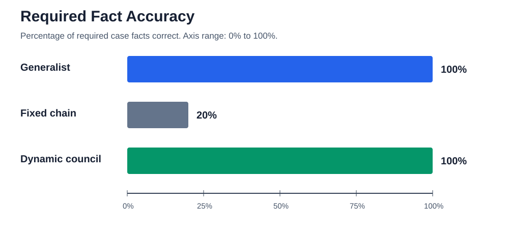
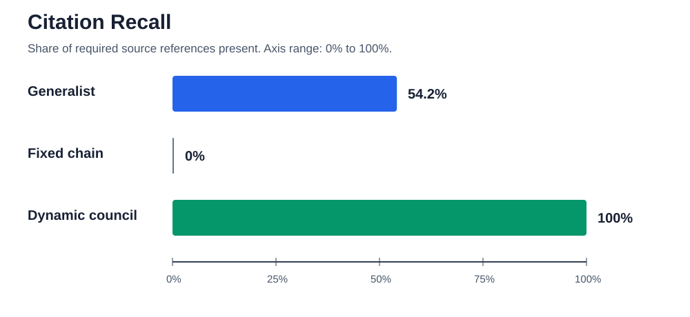
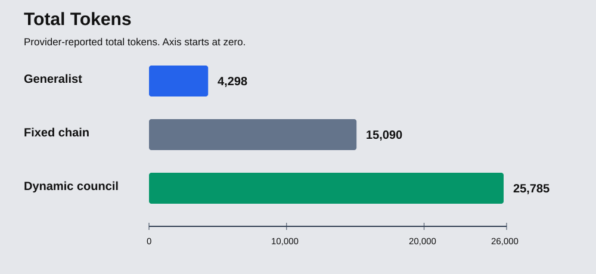
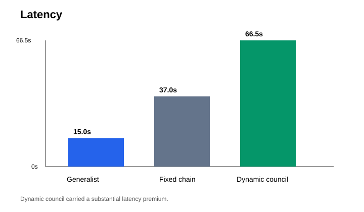

Qwen Agent Society Results
Executive Summary
Project Recovery Council tests whether a dynamically routed modular expert council can produce a higher-assurance enterprise decision than a single general-purpose agent on a synthetic equipment-delay recovery case.
The generalist was fastest and cheapest. The dynamic council produced the most complete, cited, and governable decision, but it used substantially more tokens and latency. The value proposition is higher assurance for consequential decisions, not universal efficiency.
These are single empirical runs. The report does not claim statistical significance.
Experiment Design
All three AI variants used the same synthetic case, same expected-result oracle, same Qwen model, and same evaluation rules.
- Generalist:
live-variant-single_generalist-20260617T111645Z - Fixed chain:
live-variant-fixed_expert_chain-20260617T132617Z - Dynamic council:
live-variant-dynamic_expert_council-20260617T132007Z
Catalog: empirical-result-catalog.json
Results Table
| Variant | Facts | Citation Precision | Citation Recall | Human Gate | Recommendation | Invocations | Tokens | Latency |
|---|---|---|---|---|---|---|---|---|
| Generalist | 100% | 75% | 54.2% | Correct | Correct | 1 | 4298 | 15.0s |
| Fixed chain | 20% | 0% | 0% | Failed | Missing | 5 | 15090 | 37.0s |
| Dynamic council | 100% | 100% | 100% | Correct | Correct | 6 | 25785 | 66.5s |
Charts




Interpretation
The generalist produced a factually strong answer with one invocation, 4298 tokens, and 15.0 seconds. Its main gap was provenance: citation recall was 54.2%.
The fixed chain shows that adding agents without governed handoff can degrade results. It was not intentionally weakened; the synthesis failed to retain and use validated findings.
The dynamic council produced the highest quality result, including 100% citation precision and recall, correct human escalation, correct preferred option, and correct blocked authorization state. It also cost more in tokens and time.
Recorded dynamic role-scope compliance was 0.75. Post-run offline analysis identified the remaining failure as policy drift on schedule identifier keys, not a substantive role violation. See remaining role-scope analysis.
Reproducibility
Raw provider responses are not copied into submission-artifacts/. The catalog records source run IDs, artifact paths, metrics, and manifest checksums.
- Generalist manifest checksum:
f6b9e9e79b694477b1b0972fcb7cb8bd43bbb935247088990beec998540590d2 - Fixed chain manifest checksum:
55633c0ed915b28ff96f27b0fa120927df54a02fcbd5496115c099ed011a840c - Dynamic council manifest checksum:
8367e9998e903c884c3f4999daedaf1e6e0a8bec8cd5880637dcddc904ee4107